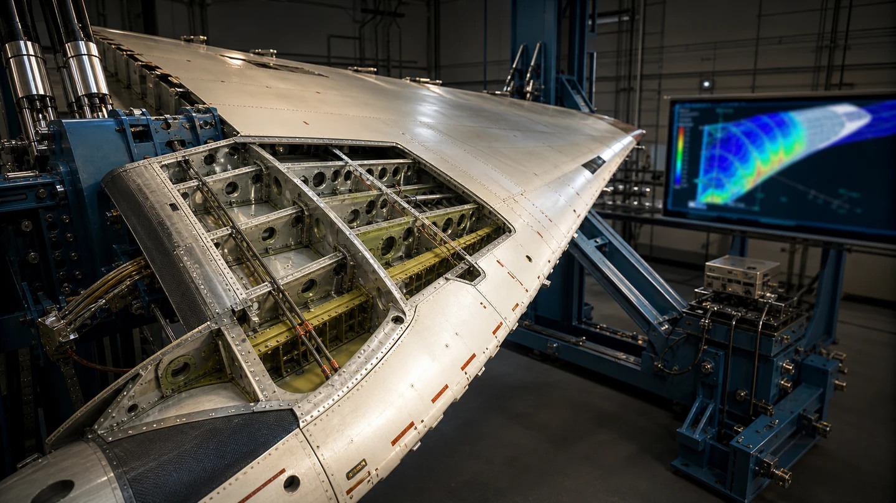
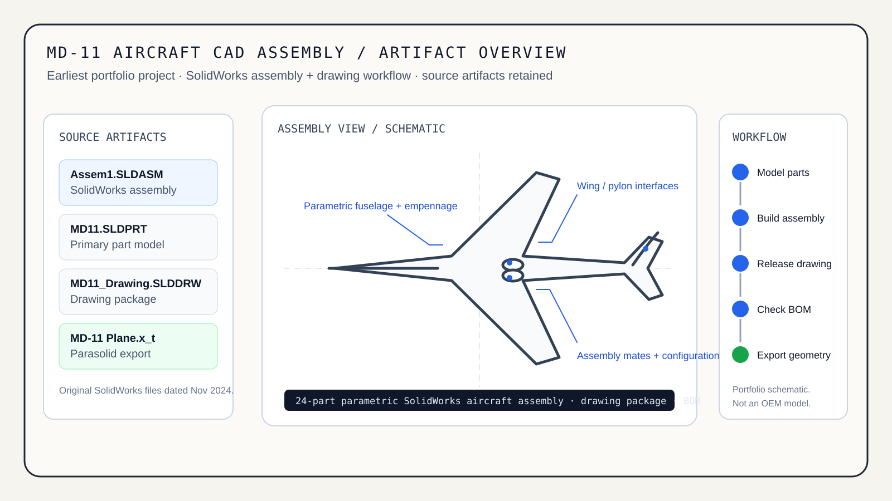

Projects / MD-11 Aircraft CAD Assembly
MD-11 Aircraft CAD Assembly
PARAMETRIC CAD / ASSEMBLY DESIGN / DRAWING RELEASE / BOM / EARLY STRUCTURAL WORKFLOW
My earliest full-aircraft design project. I built a parametric MD-11 model and assembly in SolidWorks, carried it into a drawing package and BOM workflow, and retained the native assembly, part, drawing, and neutral Parasolid artifacts.


▶ INTERACTIVE
Drive the assembly parameters
Move the sketch parameters and the three-view rebuilds, the way a parametric assembly does. Suppress a part group to see the roll-up change, or explode the assembly.
This model needs JavaScript. The retained source artifacts are listed below.
01 / SOURCE ARTIFACTS
What is actually retained
Assem1.SLDASMSolidWorks assemblyRetained native assembly artifact dated November 24, 2024.MD11.SLDPRTSolidWorks partPrimary native part model retained with the project package.MD11_Drawing.SLDDRWSolidWorks drawingDrawing artifact retained from the original CAD workflow.MD-11 Plane.x_tParasolid geometry exportNeutral geometry export retained for downstream CAD interoperability.02 / DESIGN WORKFLOW
How the aircraft model was built
Mechanical-design scope
- Full-aircraft parametric modeling in SolidWorks
- 24-part assembly organization
- Assembly mates, configurations, and rebuild-stable intent
- Drawing release workflow with GD&T / PMI annotations
- Bill of materials generation
- Geometry prepared for downstream engineering analysis
Early engineering-analysis scope
- Static, thermal, and modal FEA workflow
- Representative 2.5g maneuver loading
- Three structural hotspots identified during the study
- Geometry, thickness, and fastener-layout iterations used to address weak regions
- Academic design exercise, not OEM or certification analysis
03 / PROJECT EVOLUTION
Where this fits in the portfolio
MD-11 Aircraft CAD Assembly
Learned full-aircraft CAD organization, parametric modeling, assembly structure, drawing release, and basic engineering-analysis workflow.
AeroFrame-DT
Later structural work moved from broad aircraft modeling into traceable fitting substantiation, nonlinear FEA, allowables, fatigue, damage tolerance, and verification evidence.
04 / ARTIFACT MANIFEST
Evidence at a glance
| Artifact | Format | Role | Evidence level |
|---|---|---|---|
| Assem1.SLDASM | SolidWorks assembly | Assembly structure | Native source retained |
| MD11.SLDPRT | SolidWorks part | Primary geometry | Native source retained |
| MD11_Drawing.SLDDRW | SolidWorks drawing | Drawing release | Native source retained |
| MD-11 Plane.x_t | Parasolid | Neutral CAD exchange | Export retained |
Boundary: This is an academic CAD project and a record of my early mechanical-design development. It is not an OEM MD-11 model, an airworthiness artifact, or certification-level structural substantiation.